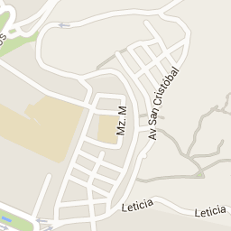

gmaps.js
Google Maps API with less pain and more fun
Routes

Dados do mapa
Dados cartográficos ©2015 Google
Dados do mapa
Dados cartográficos ©2015 Google
Dados cartográficos ©2015 Google
Termos de Uso
Informar erro no mapa
Mapa
Terreno
Satélite
45°
Marcadores
100 m
Get route
« Back
Forward »
Vire à
esquerda
na
Jirón Cailloma
Vire à
esquerda
na 1ª rua transversal para
Jirón Callao
Continue para
Jirón Huallaga
Vire à
esquerda
na
Jirón Lampa
Continue em frente na
Jirón Amazonas
O destino estará à esquerda